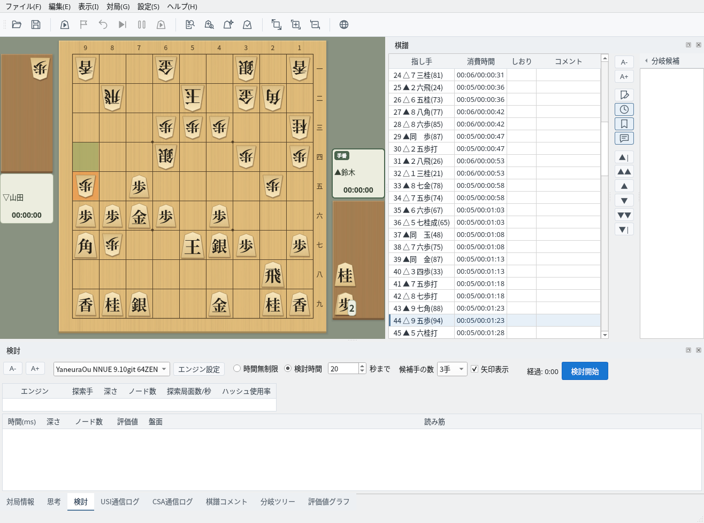
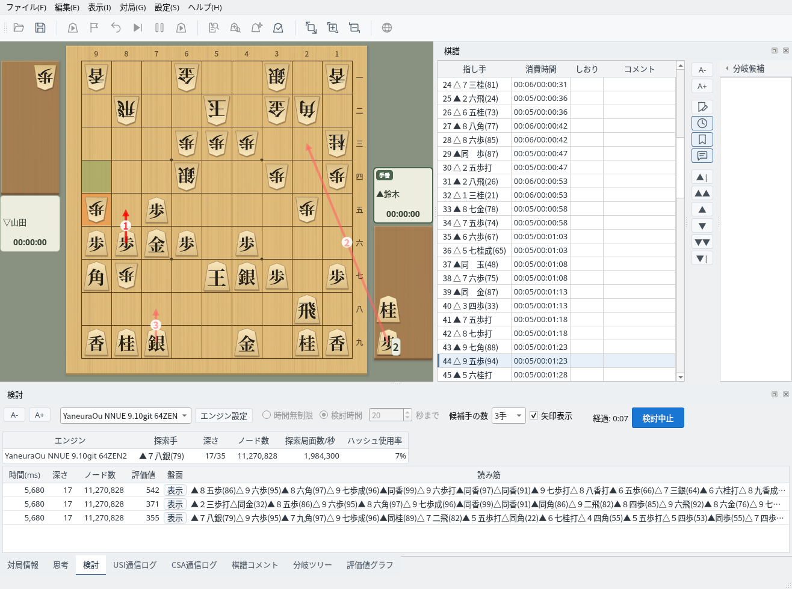
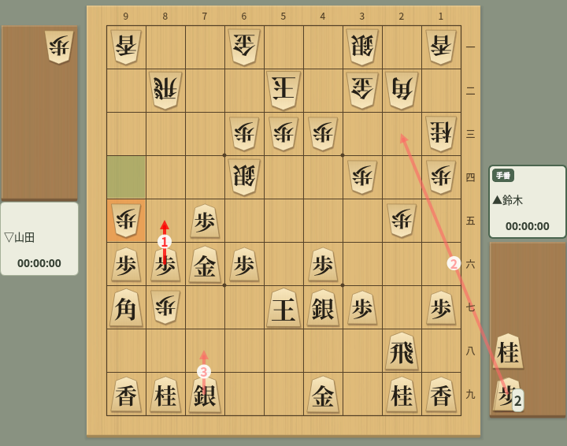
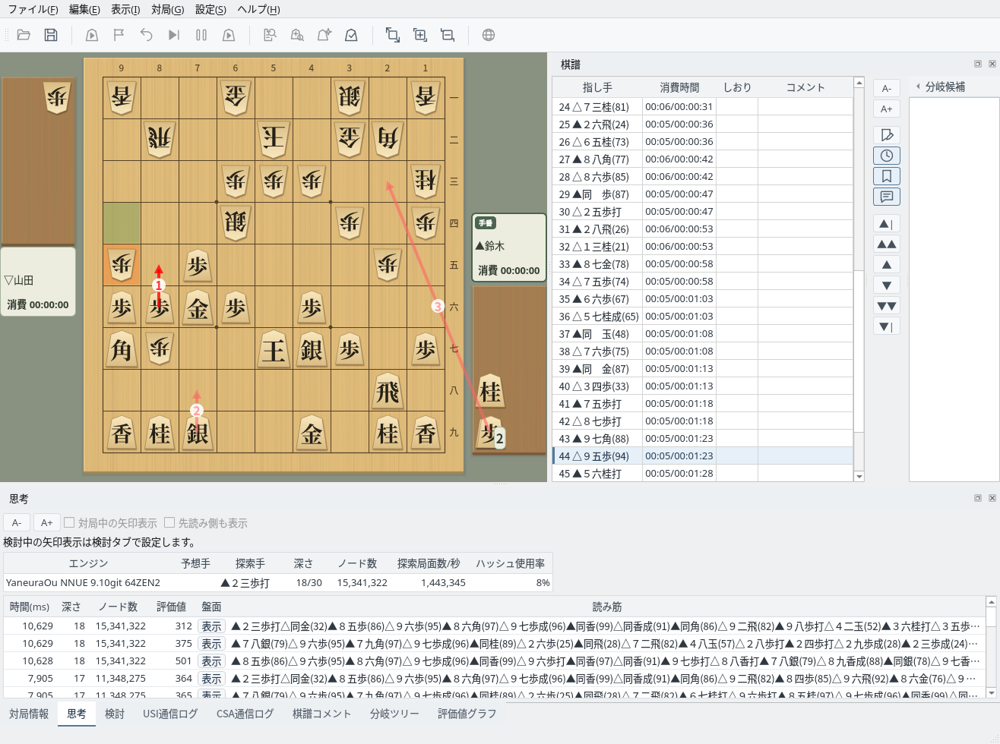
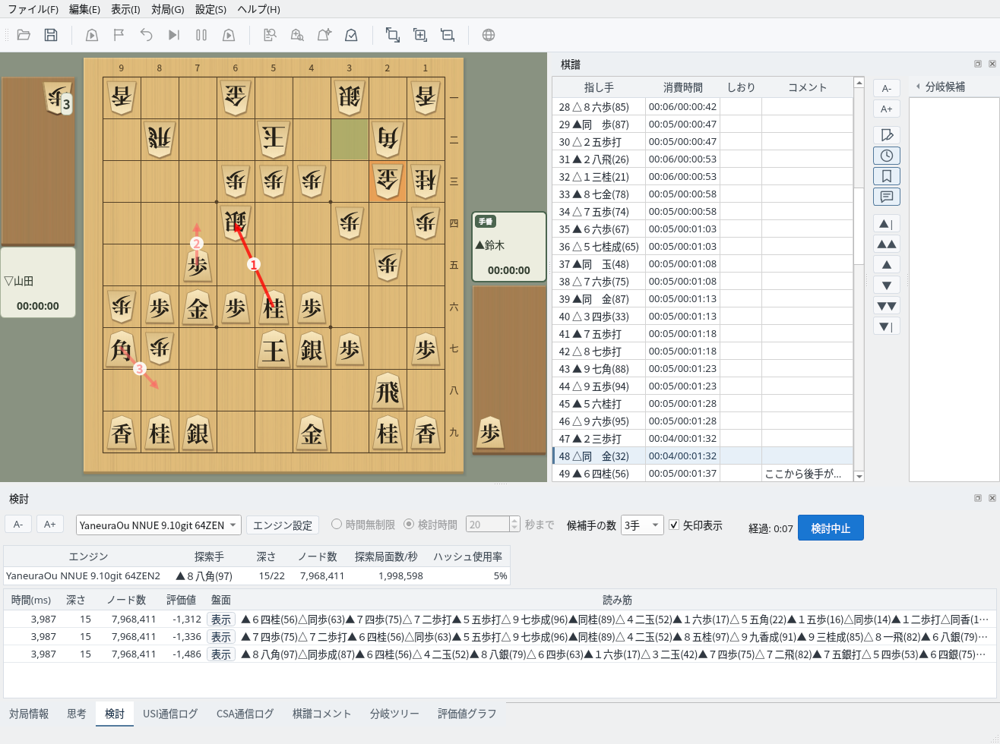

任意の局面でエンジンに候補手を検討させるモード
検討タブで検討の条件を設定します
検討タブでは次の項目を設定できます。設定は保存され、次回の起動時にも復元されます。
棋譜欄で検討したい局面を選び、「検討開始」をクリックすると、盤面に表示している局面の検討を始めます。検討時間の設定は検討中には変更できません。変更するときは「検討中止」で一度終了してください。

検討タブ：エンジン・検討時間・候補手の数・矢印表示を設定
エンジンの候補手と読み筋をリアルタイムで確認できます
検討を始めると、上段にエンジンの探索状況（探索中の手・深さ・ノード数・探索局面数/秒・ハッシュ使用率）、下段に候補手が評価値の高い順に表示されます。各行には評価値・深さ・ノード数と読み筋が表示され、「盤面」列の「表示」をクリックすると読み筋を盤面で再生できます。
候補手の数とエンジンは検討中にも変更でき、変更すると探索をやり直します。検討時間に達すると探索を止め、結果を表示したまま待機します。別の局面を選ぶか候補手の数を変えると検討を再開します。終了するときは「検討中止」をクリックします。

検討中：候補手・評価値・読み筋をリアルタイム表示
将棋盤には候補手が順位の番号付きの矢印で表示されます。最善手は濃い赤、2番目以降は薄い赤の矢印です。持ち駒を打つ手は駒台から矢印が伸びます。「矢印表示」のチェックで表示と非表示を切り替えられ、検討を中止すると矢印は消えます。

候補手の矢印：番号は候補手の順位。駒台から伸びる矢印は持ち駒の歩を打つ手
思考タブには、エンジンから届いた思考情報が新しいものから順に履歴として表示され、探索が深くなるにつれて読み筋がどう変わったかを確認できます。検討中の矢印表示は検討タブで設定するため、思考タブの「対局中の矢印表示」「先読み側も表示」は無効になります。

思考タブ：エンジンの思考情報を新しい順に表示
棋譜の別の局面を選んで検討を続けられます
検討中に棋譜欄の別の指し手をクリックするか、移動ボタンで局面を移動すると、その局面で検討をやり直します。経過時間も0から数え直します。気になる局面を次々と検討できます。

続けて検討：棋譜欄で別の指し手を選ぶと、その局面で検討をやり直す